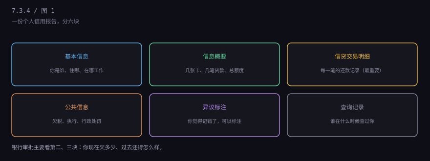
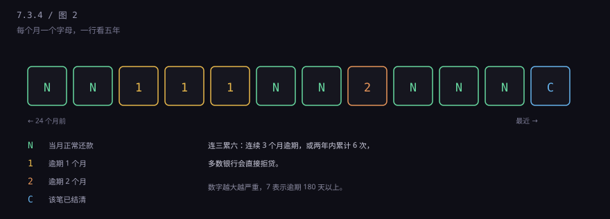
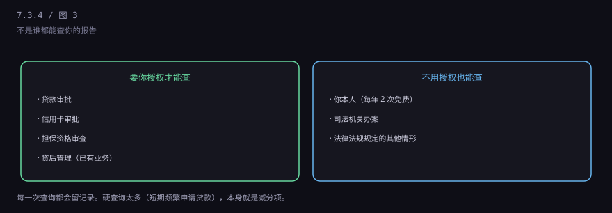
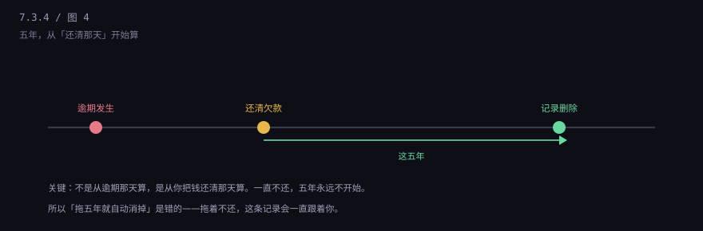

约 0.2 万字 · 4 张图 · 一份两三页的报告，决定你以后借钱贵不贵
维护它的是中国人民银行征信中心，库的名字叫"金融信用信息基础数据库"， 业内一般就叫"央行征信"。
数据不是它自己去采集的，是放贷机构报送的： 银行、消费金融公司、汽车金融公司、小贷公司、融资担保公司， 以及花呗、白条这类互联网信贷产品（2021 年起分批接入）。
报送是 T+1 的：今天发生的还款记录，明天才进库。 所以你刚还完一笔，报告上不会立刻变。
一份个人信用报告，大致分六块。

基本信息：姓名、身份证、婚姻状况、学历、住址、工作单位。 这些是从你每次办业务填的资料汇总来的，可能有旧信息。
信息概要：几张信用卡、几笔贷款、总授信额度、当前逾期总额。 这一块是给审批的人看的"摘要"。
信贷交易明细：最核心。每一张卡、每一笔贷款， 过去 24 个月的还款状态，一个月一格。
公共信息：欠税记录、民事判决、强制执行、行政处罚。 这一块很多人不知道自己有。
异议标注：如果你认为某条记错了，可以申请标注，报告上会显示"本人有异议"。
查询记录：过去两年，谁在什么时候、因为什么原因查过你。
明细里最常见的是一串字母和数字，一个月一格。很多人看不懂，其实很简单。

N：当月正常还款。 1 到 7：逾期月数。1 就是拖了一个月，7 表示逾期 180 天以上， 这个级别通常已经变成呆账，基本等于"坏账"。 C：这笔业务已经结清。 G：结束（比如销户）。
银行审批时有个说法叫"连三累六"： 连续 3 个月逾期，或者两年内累计 6 次逾期，多数银行会直接拒贷。 这不是法律，是行业惯例，各家尺度略有差别。
偶尔一次"1"，如果能说明原因（比如换卡没收到账单、出差忘了）， 影响不大，但要付更高的利率，或者被要求多付首付。
不是谁都能查。查一次，留一条记录。

需要授权的：贷款审批、信用卡审批、担保资格审查、贷后管理。 这四类是最常见的，你签的每一份合同里都有这一条。
不需要授权的：你本人（每年 2 次免费，第三次起收费）、 司法机关办案、法律法规规定的其他情形。
这里有个容易被忽略的点：查询记录本身会影响审批。 短期内被多家机构查"贷款审批"，说明你在到处借钱， 银行会认为你资金紧张。这叫"硬查询过多"，是独立的减分项， 哪怕你一次都没逾期。
除了逾期，还有几种记录更麻烦。
这些都记在报告里，而且不会因为"时间久了"自动消失—— 它们有自己的保留期限，通常是结清后五年。
这是本节最重要的一条，很多人搞错。

不良信息的保留期限是五年，从终止之日起算。 "终止"的意思是：你把钱还清了。
所以"拖五年就自动消掉"是错的。你一直不还，这五年永远不开始， 记录会一直跟着你。这也是为什么有人欠了几千块，十年后还在被拒。
还清之后，五年内这条记录还在，但影响逐年减弱： 大多数银行看最近两年的记录，两年前的逾期影响很小。 真正卡人的是"当前逾期"和"连三累六"。
报告会出错，而且不少见。常见的原因：身份被冒用、机构报送错误、 系统合并数据时张冠李戴。
发现错误，走异议流程：向征信中心或报送机构提出， 提交材料证明。按规定，征信中心要在20 天内答复。 确认是错的，会更正；确认没错，会保留并说明。
异议是唯一合法的更正渠道，而且免费。 任何声称"内部有人能删记录"的，都是骗子。
这句话可以写绝对一点：在中国，没有任何机构能合法地"修复"真实存在的逾期记录。
骗局的套路很固定：先收几千到几万的服务费，教你一套话术去跟银行"申诉"， 或者伪造材料说你是被冒名贷款。前者没用，后者是伪造证据， 可能涉嫌犯罪。
真实的记录，只有两种情况能改：一是确实记错了（走异议）， 二是银行自己发现报错了（主动更正）。除此之外，没有第三条路。
7.3 这一章到这里。三节连起来看：开户是"把人绑到账户上"（7.3.1）， 分类是"这个户能干什么"（7.3.2），KYC 是"这个人的钱干不干净"（7.3.3）， 征信是"这个人过去还得怎么样"（7.3.4）。
下一章讲你每天揣在兜里的那张塑料卡片：卡号里有什么秘密， 芯片和磁条差在哪，借记卡和信用卡到底不是一回事。